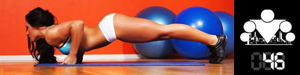

Дмитрий Калашников, Председатель Ассоциации Профессионалов Фитнеса, Сертифицированный ISSA персональный фитнес тренер,
в цикле статей "Мифы и легенды бодибилдинга" для журнала «Тренер ON-LINE» прекрасно разобрался со многими существующими в данный момент мифами среди тех,
кто начинает заниматься фитнесом (воркаутом или в зале, не так важно). Мы выделили из его статей 3, наверное самых популярных мифа. Специально для участников нашей программы ;)
Миф №1. Большие мышцы можно накачать только с помощью упражнений с большими весами, а тренировки с небольшим весом или без веса дадут только рельеф.
Если честно, то вашему организму вообще все равно какой вес вы поднимаете, потому что он не рассуждает в духе "нет, ну сейчас чувак мало повесил блинов на себя/штангу,
поэтому в этот раз я не буду расти". Ваш организм рассуждает в духе "что этот чувак делает? у меня недостаточно мышц, чтобы выдерживать такие нагрузки, надо что-то менять"!.
Рост мышц - это следствие процесса адаптации, то есть процесса приспособления вашего организма к внешней среде и её условиям. Чтобы мышцы начали расти - нужно создать для организма
потребность в их наращивании!
И именно такая потребность создается во время тренировок. Вообще физические упражнения приводят к разнообразным изменениям, негативного характера, как в самих мышцах,
так и во всех других системах, там, в общем, большой перечень:
Цитата №1:
В мышцах значительно снижаются запасы источников энергии - креатинфосфата и гликогена.
Из-за резко увеличившегося анаэробного гликолиза - процесса энергообеспечения - изменяется химический состав мышечных волокон.
Увеличивается содержание аденозиндифосфата, креатина, ионов водорода, лактата. Мышечные клетки как бы «отравляются», «закисляются».
Кроме этого, может происходить микротравматизация отдельных мышечных волокон, подвергаются разрушению различные белковые структуры.
Подвергается значительной нагрузке нервная и нервно-мышечная система. В центральной нервной системе развивается резкое возбуждение,
которое затем сменяется запредельным торможением. Чрезмерная интенсивность нервных импульсов к мышцам истощает и генерирующие их нервные клетки.
Нарушается электрохимическое сопряжение при передаче с нерва на мышцу. Дополнительная нагрузка ложится и на эндокринную систему, которая вынуждена
с особым усердием в повышенных количествах секретировать сначала гормоны, ответственные за срочную поставку резервных источников энергии,
а затем гормоны, включающие восстановительные, синтетические (строительные) процессы. Не остается в стороне и сердечно-сосудистая, и дыхательная системы.
Но самое главное - не это, главное заключается в том, что если нагрузка на тренировке была выше того уровня, к которому привык организм,
то она запустит механизм общей адаптации организма, не только к конкретной нагрузке, но и вообще. Сначала организм восстановит все системы до прежнего уровня (это называется восстановлением),
а потом продолжит их укреплять и дальше (это называется сверхвосстановлением). Чем-то напоминает процесс защиты крепости, когда вы отбили очередную атаку неприятеля и решили,
что надо бы вырыть защитный ров перед замком, на будущее.
Это что касается больших мышц. Но часть нашего мифа посвящена так называемому "рельефу" и здесь нам с вами тоже предстоит открыть много нового.
Во-первых, мышцы не могут быть рельефными или нерельефными, бесформенными или проработанными. Мышцы могут быть большими или маленькими, сильными и слабыми,
но под слоем кожи и жира мышечные волокна всегда рельефные, сухие и проработанные! Так что, когда речь заходит о рельефе, нужно говорить о рельефности тела (с хорошо видимыми мышцами)
или отсутствии этой рельефности. И эта рельефность, во-первых, зависит от величины подкожного жира, находящегося над мышцами (больше жира - меньше рельефа),
так и от размера мышцы (больше мышца - лучше видна под жиром).
И единственные изменения, которые мы можем производить с мышцами, это делать их больше (гипертрофировать)/меньше (атрофировать), сильнее или слабее. Здесь вот важное замечание нужно сделать:
Цитата №2:
Мышца не может менять своей формы (если только она не состоит из волокон или пучков, расположенных в разных направлениях и осуществляющих разные движения тех костей,
к которым они прикреплены). Она не может увеличиваться одной своей частью, не может становиться длинней или короче. Единственное, что мы можем сделать со своей мышцей, -
это попытаться ее увеличить всю, целиком. Все то разнообразие форм мышц, которое можно видеть у стоящих на сцене бодибилдеров обусловлено не тем, что они по-разному их тренируют, а их генетикой.
У одного бицепс короткий, пикообразный, а у другого пологий, длинный, заканчивающийся практически в локтевом сгибе. У одного широчайшие как капюшон у кобры, опускаются чуть ли не до таза,
а у другого они настолько коротки, что выглядят распирающими в стороны руки буграми подмышками. Все делают приблизительно одни и те же упражнения,
а вот какой формы будут мышцы, когда они вырастут (если вырастут...), будет зависеть от того, что досталось атлету по наследству от родителей.
Поэтому единственное что должно волновать вас по-настоящему, если ваша цель - нарастить мышцы, это правильный подбор упражнений. А правильным он будет называться тогда,
когда будет выполнять свою главную роль - создавать у организма потребность в адаптации. Зависеть это будет от разных факторов, но общее правило заключается в том,
что чем больше мышц задействуется в процессе выполнения упражнения, тем оно эффективнее.
Глобально же рост мышц (гипертрофию) может вызвать любой тренировочный режим: как объемный (многоповторный), так и высокоинтенсивный.
Другое дело, что увеличиваться будут разные части мышечного волокна: миофибриллы (сократительные элементы мышца), митохондрии (ее микроэлектростанции),
саркоплазма (внутриклеточная жидкость со всем ее содержимым) или другие элементы мышц. Какие-то режимы будут для конкретного атлета более эффективными, какие-то - менее.
Один спортсмен может иметь бóльшую склонность к гипертрофии за счет саркоплазмы, другой - за счет миофибрилл. Но все эти режимы призваны решать единственную задачу -
что-то в мышечной ткани увеличить!
Следует так же заметить, что не существует (практически) упражнений абсолютно полезных или бесполезных, эффективных или не эффективных.
Здесь так же следует отталкиваться от уровня подготовки человека, выполняющего упражнения. Новичку, решившему начать свои тренировки со 100 дневного воркаута,
и обладающему низким уровнем координации движений, подвижности в суставах и способности к осознанности своего тела, будет более чем достаточно базовых упражнений,
составляющих основу программы, таких как отжимания от пола, подтягивания и приседания.
Миф №2. Различными упражнениями можно дать нагрузку на разные части мышцы (варианты: сместить нагрузку, проработать отдельную часть и т.п.)
и чтобы полноценно проработать мышцу нужно тренировать её разными упражнениями, варьируя "углы атаки", ширину хватов, постановку рук и т.д.
Скажу сразу, что под разными углами нужно прорабатывать только те мышцы, которые состоят из пучков, расположенных в разных направлениях и выполняющие разные движения.
Например, большая грудная мышца состоит из трех пучков (верхнего (ключичного), среднего (грудинного) и нижнего (брюшного)),
поэтому и имеет смысл делать отжимания в разных плоскостях (когда ноги и руки на одном уровне, когда ноги выше рук, когда руки выше ног). Но, в тоже самое время,
широчайшая мышца спины едина, поэтому смена ширины хвата на перекладине для проработки мышцы по всей ширине не имеет смысла, потому что если все пучки и волокна мышцы выполняют одно движение,
дать нагрузку на отдельную ее часть невозможно!
Теперь, чтобы представить себе что происходит с мышцей в процессе выполнения упражнения, представьте себе резиновый жгут, растянутый и прикрепленный к двум, шарнирно соединенным
друг с другом костям. Сжимаясь, резина будет приближать кости друг к другу (в анатомии такое движение называется сгибанием), тоже самое делает и сокращающаяся мышца. Внимание, вопрос!
Можете ли вы представить себе, чтобы одна часть резины была более напряжена, чем другая? Нет? Вот и мышца также будет также равномерно сокращаться, передавая усилие с одной кости к другой.
Происхождение этого мифа связано с тем, что при выполнении некоторых упражнений возникают разнообразные болезненные ощущения - жжение, "горение", тупая боль, боль от растягивающих усилий -
ближе к началу или к месту прикрепления мышцы. Эти виды боли могут возникать по разным причинам: закисление мышцы (жжение), максимальные напряжение в состоянии предельного укорочения
(тупая боль, "ломота"), значительное растяжение мышцы, находящейся под нагрузкой. В свою очередь то, в каком месте мы почувствуем болезненные ощущения, будет зависеть от того,
где в большей степени находятся те рецепторы, которые регистрируют эти состояния. Например, рецепторы, регистрирующие растяжение мышечных волокон, располагаются на концах мышцы,
в месте ее перехода в сухожилие, и в самих сухожилиях. Поэтому, например, при растягивании мышц задней поверхности бедра, мы будем ощущать боль в подколенных сухожилиях,
хотя эти мышцы будут растягиваться целиком, от начала до места их прикрепления. Точно так же дело обстоит с болью в мышцах по другим причинам. Таким образом, хотя мышца и напрягается вся,
целиком, однако мы можем почувствовать боль в отдельной ее части.
С другой стороны мышцы привыкают к однотипной нагрузке, поэтому необходимо время от времени менять её характер - количество повторений, вес,
скорость движения, допускать или не допускать расслабления мышцы между повторениями, использовать или не использовать инерцию движения снаряда, пиковое изометрическое сокращение и другие параметры.
Ну а одно упражнение на другое или шило на мыло можно менять только чтобы внести психологическое разнообразие в тренировки.
Миф №3. Можно уменьшить количество жира локально, выполняя упражнения на определенные части тела.
Как вы уже понимаете из названия сегодняшнего инфо-поста - этот миф, не более чем миф и невозможно убрать жир локально с так называемых проблемных зон, то есть мест, где наибольшее количество подкожного и висцерального жира (обычно это бедра, ягодицы, бока и живот). Организм не просто так выбрал именно эти места для хранения запасов, именно в этих местах наиболее важны защитная и термоизоляционная функции жира тела. Ну и его там просто удобно носить из-за близости к центру тяжести.
Процесс накопления жира, равно как и процесс его расщепления регулируются в нашем организме с помощью гормонов, выбрасываемых в кровь и транспортируемых по всему организму. При этом сила реакции на гормон напрямую зависит от количества рецепторов, способных вступить в контакт с молекулой конкретного гормона. В так называемых проблемных зонах жировая ткань имеет наибольшее количество рецепторов, отвечающих за липогенез (строительство жировых клеток), и наименьшее - за липолиз (их расщепление). И такое соотношение будет сохраняться вне зависимости от того, в каких конкретно мышечных группах возникает потребность в дополнительной энергии.
Таким образом, единственный способ уменьшить количество жира в определенной части тела - это уменьшить количество жира в организме в целом.
======> День 47. Мифы о кардио тренировках